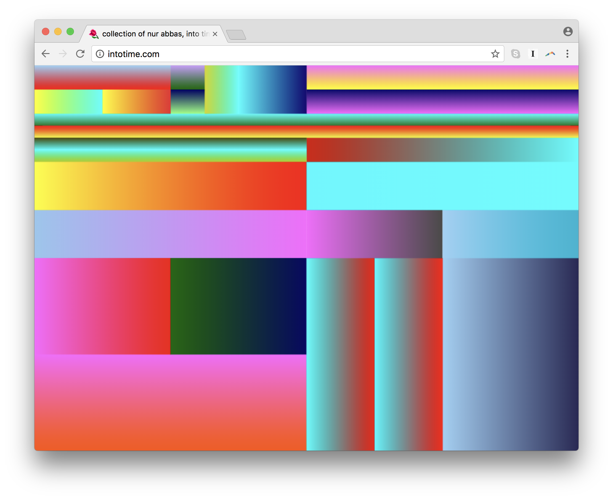
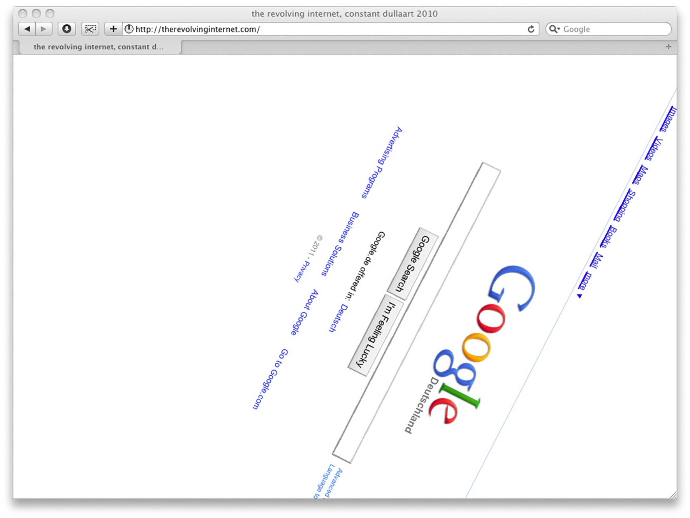
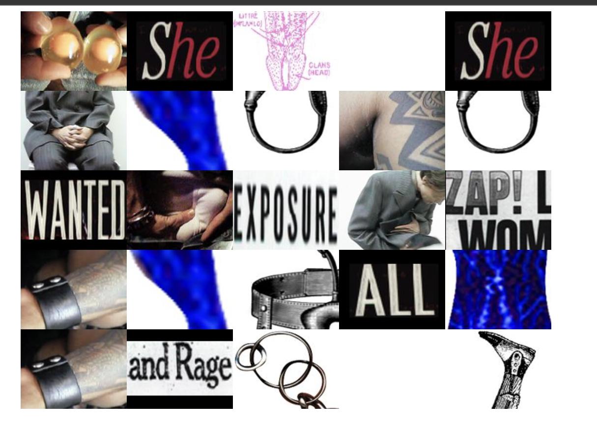

Into Time .com
Artist: Rafaël Rozendaal
Year: 2010
This website uses changing colors and geometric shapes to create an interactive visual experience.
Visit Website ↗ONLINE ART EXHIBITION
Curated by YuBo Wang
"The exhibition is about the visual impact of internet art. The three projects provide a variety of visual experiences through the use of bright colors, changing shapes, moving images and special effects. Every site has its own style and different ways to grab viewer’s attention. I want viewers to enjoy these works and feel the impact of colors, shapes, and movement. I hope they will also see how simple things on a screen can be made into interesting works of art. These projects show that the Internet is not just a place to find information, but a place to explore colors, images and new ideas. The exhibition gives visitors a chance to see how visual design can make a website more creative, fun and exciting. I hope viewers can break away from their usual browsing habits, focus on the images, and find out how different colors and movements can make different feelings.

Artist: Rafaël Rozendaal
Year: 2010
This website uses changing colors and geometric shapes to create an interactive visual experience.
Visit Website ↗
Artist: Constant Dullaart
Year: 2010
This project rotates the Google search page and changes a familiar browsing experience.
Visit Website ↗
Artist: Shu Lea Cheang
Year: 1998–1999
This project uses images, links, and interactive storytelling to explore identity and online experiences.
Visit Website ↗